00이 매뉴얼에 대하여
건축허가조사 및 검사조서는 건축법 제27조에 따라 현장조사 · 검사 및 확인업무를 대행하는 건축사가 허가권자에게 내는 별지 제23호서식 「건축허가조사 및 검사조서」와 첨부 「한국건축규정」 체크리스트(별표 2)를 세움터와 같은 줄 · 같은 선택지로 작성해 A4로 출력하는 웹 도구입니다. 설계개요 PDF에서 개요 값을 읽어 오고, 그 값으로 체크리스트 답을 먼저 골라 주는 「자동 선판정」을 갖추었습니다.
| 항목 | 내용 |
|---|---|
| 대상 프로그램 | 건축허가조사 및 검사조서 MANMIN Ver-6.1 (v6.1.17) — 탭 막대 「📘 매뉴얼」 단추로 이 문서가 열립니다 |
| 접속 주소 | manminkim-eng.github.io/Building-Permit-Report |
| 근거 | 건축법 제27조 · 같은 법 시행규칙 제21조 · 별지 제23호서식 · 건축기본법 제25조 · 한국건축규정(국토교통부 고시) 별표 2 |
| 예제 | 가상 사업 「만민 연구동 신축공사」 — 면적 · 층수 · 체크리스트 답은 세움터 견본 출력물(교육연구시설 연구소, 연면적 712.14㎡)과 같고(v6.1.14 보강 8항목은 그 건에 해당 없어 「대상법규아님」), 사업명 · 건축주 · 위치만 바꾸었습니다 |
| 기준 시점 | 2026-11-13 — 화면 캡처 날짜 고정 · 법령은 LawMCP 원문 조회일 기준 |
01한눈에 보기
설치 없이 브라우저에서 바로 실행되는 단일 페이지 앱(PWA)입니다. 설계개요 PDF · 입력값 · 저장 파일은 모두 내 기기 브라우저 안에서만 처리되며 서버로 전송되지 않습니다.
무엇을 만드나
별지 제23호서식 조서 표지 + 건물개요 요약 + [별표 2] 한국건축규정 체크리스트(■/□)
자동으로 해 주는 것
설계개요 PDF 읽기 · 건폐율 · 용적률 계산과 법정값 대조 · 51개 시 · 군(전북 · 전남 · 충남) 조례 안내(건폐율 · 용적률 · 조경 · 공개공지 · 분할 · 부설주차장 · 대지 안의 공지) · 개요 값으로 체크리스트 답 140항목 선판정 · 법령 이름에서 현행 조문 열기
근거
건축법 제27조 · 시행규칙 제21조 · 별지 제23호서식 · 건축기본법 제25조 · 한국건축규정 별표 2
출력
A4 인쇄 · PDF · JPG — 전체 10쪽 또는 「대상법규아님」을 뺀 선별 3쪽(예제 기준)
1-1. 화면 구성
- 1작업 탭: 개요 입력 · 체크리스트 · 조서 · 체크리스트 · 근거 · 매뉴얼
- 2진행 스트립: 입지 · 건축물 · 전체 · 실질 답 · 미답이 답할 때마다 갱신
- 3근거 안내: 건축법 제27조제2항 · 시행규칙 제21조제1항
- 4「설계개요 PDF 불러오기」 · 「파일로 저장」 · 「파일 불러오기」 · 「전체 초기화」
- 5조서 표지 — 별지 제23호서식 칸
- 6건물개요 — 조서 뒤 요약표와 자동 선판정에 쓰임
- 7오른쪽 아래 단추: 「건물개요」(다른 MANMIN 도구와 현장 정보 주고받기) · 「작성 안내」 창
| 탭 | 하는 일 | 본문 |
|---|---|---|
| 📝 개요 입력 | 조서 표지 · 조사/검사자 · 건물개요 · 종합의견 입력, 설계개요 PDF 불러오기, 파일 저장 · 불러오기 | 3-1~3-6 |
| ☑ 체크리스트 | 법령 102개 · 체크항목 159개의 답 고르기, 자동 선판정, 보기 · 찾기, 법령 이름(↗)으로 현행 조문 열기 | 3-7~3-10 |
| 📄 조서 · 체크리스트 | A4 조서 미리보기 · 인쇄 / PDF · JPG 저장 · 세부 호 인쇄 · 선별 제출 | 3-11~3-13 |
| ⚖️ 근거 | 법적 근거 조문 요약 · 이 판의 데이터와 한계 · 법령 대조 기준일 · 들어 있는 조례 목록 | 3-14 |
| 📘 매뉴얼 | 이 매뉴얼을 새 창으로 엽니다(인터넷 연결 필요) | 1-3 |
1-2. 작업 탭·근거 표시
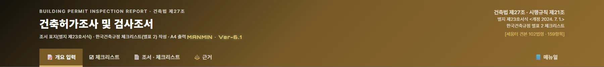
123456- 1개요 입력
- 2체크리스트
- 3조서 · 체크리스트
- 4근거
- 5📘 매뉴얼 — 이 매뉴얼을 새 창으로(탭 막대 오른쪽 끝)
- 6근거 법령 · 서식 개정일 · 데이터 범위(세움터 견본 102법령 · 159항목)
1-3. 설치·보관·매뉴얼
| 항목 | 내용 |
|---|---|
| 설치(선택) | 크롬 · 엣지 주소창의 설치 아이콘 또는 화면 아래 설치 안내를 누르면 앱으로 설치됩니다. 아이폰 · 아이패드는 사파리 공유 단추 → 「홈 화면에 추가」 |
| 오프라인 | 한 번 연 뒤에는 인터넷이 끊겨도 작성 · 출력이 됩니다. 설계개요 PDF 읽기 도구(pdf.js)도 미리 받아 둡니다. 매뉴얼은 인터넷에 연결되어 있을 때만 열립니다 |
| 작성 내용 보관 | 자동 저장은 하지 않습니다. 「💾 파일로 저장」으로 작성 내용을 내 기기에 .json 파일로 남기고, 「📂 파일 불러오기」로 이어서 작성합니다. 건축주 이름 · 지번이 들어가므로 파일은 기기 안에서만 보관하십시오 |
| 건물개요 공유 | 사업명 · 위치 · 건축주 · 작성자 · 연면적 · 층수 · 높이 · 구조는 「🏢 건물개요」 단추로 이 브라우저에 담아 두었다가 다른 MANMIN 도구에서 불러올 수 있습니다 |
| 업데이트 | 새 버전이 올라오면 다음 접속 때 바뀝니다. 화면이 예전 그대로면 새로 고침(Ctrl+F5) |
023분 따라하기
예제 PDF로 6단계를 따라 하면 체크리스트 159항목이 모두 채워지고 A4 조서 10쪽이 나옵니다.
- 설계개요 PDF 불러오기「📄 설계개요 PDF 불러오기」를 눌러 도면 PDF를 고릅니다. 개요 쪽을 찾아 읽은 값이 미리보기 창에 나오면 확인한 뒤 「채우기」를 누릅니다(3-2).
- 개요 확인 · 직접 넣을 칸건물개요의 값과 아래 계산 줄(건폐율 · 용적률 → 적합/초과), 그 아래 조례 값 안내를 확인하고, 설계일자 · 면허번호 · 종합의견 · 건축주 구분(민간 · 공공)처럼 PDF에 없는 칸을 넣습니다(3-3~3-6).
- 자동 선판정「☑ 체크리스트」 탭에서 「⚡ 개요로 자동 선판정」을 누릅니다. 예제는 140항목이 근거와 함께 나옵니다. ① · ② 묶음 63항목은 처음부터 체크되어 있고, ③ 지역지구 글자 묶음 45항목은 토지이용계획확인원과 맞는지 본 뒤 묶음 체크를 켭니다. 예제는 ①~③ 묶음 108항목을 「체크한 답 채우기」로 넣습니다(3-8).
- 체크리스트 결과나머지 항목의 답과 세부 호를 고르면 진행 스트립이 전체 159/159 · 실질 답 26칸이 됩니다. 해당 없는 줄은 「미답 항목을 대상법규아님으로」로 한 번에 채울 수 있습니다(3-9~3-10).
- 조서 확인「📄 조서 · 체크리스트」 탭에서 조서 표지 · 건물개요 · 체크리스트 · 서명란을 확인합니다(3-12).
- 인쇄 · 저장「🖨️ 인쇄 / PDF 저장」 또는 「🖼️ JPG 저장」으로 남깁니다. 확인이 필요한 항목만 내려면 「대상법규아님 줄 빼고 인쇄」를 체크합니다(3-13). 작성 내용은 「💾 파일로 저장」으로 보관합니다.
| 단계 | 예제 결과 | 본문 |
|---|---|---|
| PDF 불러오기 | 개요 쪽 1쪽에서 19칸을 읽음 — 법정 건폐율 70 % · 법정 용적률 350 % 포함 | 3-2 |
| 계산 줄 | 건폐율 26.2 % · 용적률 29.8 % (용적률 산정용 연면적 기준) → 건폐율 적합(법정 70 %) · 용적률 적합(법정 350 %) | 3-5 |
| 조례 값 안내 | 예제 대지위치는 가상 지명이라 「이 대지위치의 조례 값은 들어 있지 않습니다」가 나옴 — 51개 시 · 군이면 조례 건폐율 · 용적률 · 건축 조례 · 주차장 · 대지 안의 공지 안내가 나옴 | 3-5 |
| 자동 선판정 | 140항목 제안(① 4 · ② 59 · ③ 45 · ④ 32) → 기본 체크 ① · ② 63항목 + 토지이용계획 확인 뒤 ③ 45항목 = 108항목 채움 | 3-8 |
| 선판정 뒤 | 한국건축규정 체크리스트 (108/159) — 입지 관련 38/48 · 건축물 관련 70/111 · 실질 답 11칸 | 3-7 |
| 모두 답한 뒤 | 한국건축규정 체크리스트 (159/159) — 입지 관련 48/48 · 건축물 관련 111/111 · 실질 답 26칸 | 3-10 |
| A4 출력 | 전체 10쪽 · 선별 3쪽 — 서명란과 꼬리말은 마지막 쪽 맨 아래 | 3-12~3-13 |
03화면별 기능 상세
탭 순서대로 설명합니다. 개요 입력 탭은 왼쪽 열이 조서 표지 · 조사/검사자, 오른쪽 열이 건물개요 · 종합의견입니다.
3-1. 파일 단추
- 1「📄 설계개요 PDF 불러오기」 — 도면 PDF에서 개요 값을 읽음
- 2「💾 파일로 저장」 — 작성 내용(개요 · 답 · 비고)을 .json 파일로
- 3「📂 파일 불러오기」 — 저장한 파일로 이어서 작성
- 4「↺ 전체 초기화」 — 입력과 답을 모두 지움(확인 창)
3-2. 설계개요 PDF 불러오기
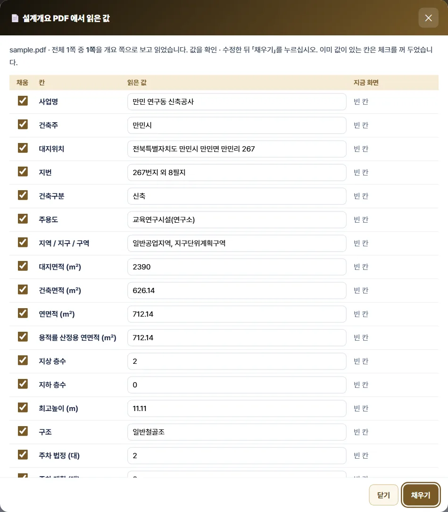
12345- 1읽은 파일 · 개요로 본 쪽 · 안내
- 2「채움」 체크와 읽은 값(고쳐 쓸 수 있음) · 지금 화면 값
- 3지역 / 지구 / 구역 — 자동 선판정 ③ 묶음에 쓰임
- 4대지면적 등 숫자 칸 — 단위(㎡ · %)는 떼고 숫자만
- 5「채우기」 — 체크한 칸만 화면에 넣음
- PDF는 이 기기 브라우저 안에서만 읽습니다(서버 전송 없음). 처음 한 번은 읽기 도구(pdf.js)를 받느라 인터넷이 필요합니다.
- 쪽마다 「대지면적 · 건축면적 · 건폐율 · 용적률 · 연면적 · 지역 · 높이 · 주차 · 구조 · 규모 · 대지위치 · 주용도」 칸 이름이 몇 개 있는지 세어 가장 많은 쪽을 개요 쪽으로 봅니다.
- 칸 이름과 값은 화면 좌표로 짝짓습니다 — 같은 줄의 오른쪽 칸, 없으면 같은 열의 아래 칸입니다. 건폐율 · 용적률 줄에 「법정 70 % 이하」처럼 적혀 있으면 법정값도 읽습니다.
- 개요에 층수 칸이 없고 「층별」 표만 있으면 그 열의 「1층 · 2층 · 지하1층 · B1」로 지상 · 지하 층수를 읽습니다. 주차가 「= 3.31대」처럼 소수 산출식이면 주차장법 시행령 별표 1 비고 6(0.5 이상 1대)으로 법정 3대를 넣고 미리보기 참고 줄에 알립니다. 「지목」 칸(전 · 답 · 임야 등 28개 이름)도 읽습니다(v6.1.14).
- 이미 값이 있는 칸은 체크를 꺼 둡니다. 「같음」이면 그대로 둡니다.
- 주민등록번호 모양(6자리-7자리) 글자는 어떤 칸에도 넣지 않습니다.
- 글자가 선으로 바뀐 PDF(도형형)는 「글자 정보가 없습니다」 안내 후 직접 입력으로 넘어갑니다(4-6).
3-3. 조서 표지 — 별지 제23호서식
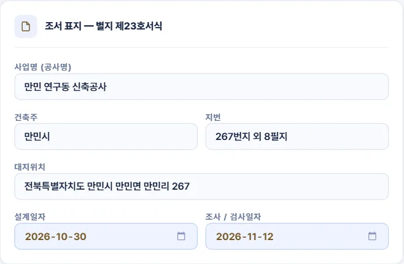
123456- 1사업명(공사명) — 조서 뒤 「참고 — 건물개요」에 인쇄
- 2건축주
- 3지번 — 「267번지 외 8필지」처럼
- 4대지위치
- 5설계일자
- 6조사 / 검사일자 — 처음 열 때 오늘 날짜, 서명란 날짜로도 쓰임
3-4. 조사 / 검사자
- 1성명 — 서명란에 인쇄
- 2면허번호
- 3협회 회원번호
- 4등록번호(사무소)
- 5사무소명
서식의 「조사 / 검사자」 칸(성명 · 면허번호 · 협회 회원번호 · 사무소명 · 등록번호)과 같은 순서입니다. 성명 · 사무소명은 처음 값이 들어 있으니 본인 것으로 바꾸고, 「파일로 저장」해 두면 다음 현장에서 불러올 수 있습니다.
3-5. 건물개요
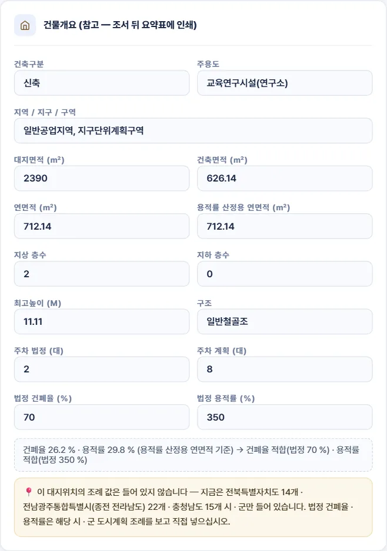
123456789101112- 1건축구분 · 주용도
- 2지역 / 지구 / 구역 — 토지이용계획확인원의 글자 그대로(「1종 일반주거지역」처럼 「제」 없이 써도 읽음)
- 3지목 — 농지전용 · 개발행위 · 입목벌채 선판정용(조서에는 인쇄 안 함)
- 4건축주 구분 — 민간 · 공공(재생에너지 · 야생생물 · 개방주차장 · 차양 선판정용, 조서에는 인쇄 안 함)
- 5토지 형질변경 · 접한 도로 너비 · 조경(법정) — 개발행위 세부 호 · 접도 선판정용(조서에는 인쇄 안 함, 예제는 비움)
- 6대지 · 건축 · 연면적 · 용적률 산정용 연면적(㎡)
- 7지상 · 지하 층수
- 8최고높이(m) · 구조
- 9주차 법정 · 계획(대)
- 10법정 건폐율 · 용적률(%) — 조례 값
- 11계산 줄 — 건폐율 · 용적률과 법정값 대조
- 12조례 값 안내 — 예제는 가상 지명이라 「들어 있지 않습니다」로 나옴(건축 조례 · 주차 상자는 나오지 않음)
건물개요는 조서 뒤 요약표에 인쇄되고, 자동 선판정의 입력이 됩니다. 계산 줄은 건폐율 = 건축면적 ÷ 대지면적, 용적률 = 용적률 산정용 연면적(없으면 연면적) ÷ 대지면적이며, 법정값을 넣으면 「적합 / 초과」를 함께 보입니다. 예제: 건폐율 26.2 % · 용적률 29.8 % (용적률 산정용 연면적 기준) → 건폐율 적합(법정 70 %) · 용적률 적합(법정 350 %)
조례 값 안내 (51개 시 · 군) — 계산 줄 아래 상자입니다. 아래 그림은 설명을 위해 대지위치를 익산시로 바꾸고 법정 칸을 비운 모습입니다.
- 1계산 줄 — 법정 칸이 비면 대조하지 않음
- 2조례 값 상자 — 조례 이름(↗ 누르면 국가법령정보센터의 조례 원문이 새 창으로) · 시행일 · 찾은 용도지역 · 건폐율 · 용적률과 조문 번호
- 3「조례 값 채우기」 — 눌러야 법정 건폐율 · 용적률 칸에 들어감
- 찾는 방법 — 대지위치 칸에 시 · 군 이름(전북특별자치도 전주시 · 군산시 · 익산시 · 정읍시 · 남원시 · 김제시 · 완주군 · 진안군 · 무주군 · 장수군 · 임실군 · 순창군 · 고창군 · 부안군 / 전남광주통합특별시(종전 전라남도) 목포시 · 여수시 · 순천시 · 나주시 · 광양시 · 담양군 · 곡성군 · 구례군 · 고흥군 · 보성군 · 화순군 · 장흥군 · 강진군 · 해남군 · 영암군 · 무안군 · 함평군 · 영광군 · 장성군 · 완도군 · 진도군 · 신안군 / 충청남도 천안시 · 공주시 · 보령시 · 아산시 · 서산시 · 논산시 · 계룡시 · 당진시 · 금산군 · 부여군 · 서천군 · 청양군 · 홍성군 · 예산군 · 태안군)이 있고, 「지역 / 지구 / 구역」 칸에 용도지역이 하나 있으면 그 시 · 군 도시계획(군계획) 조례의 건폐율 · 용적률을 보입니다.
- 자동으로 넣지 않습니다. 「조례 값 채우기」를 눌러야 법정 칸에 들어가고, 이미 다른 값이 있으면 바꿀지 먼저 묻습니다.
- 넣은 법정값이 조례 값과 다르면 붉은 글씨로 알립니다(지구단위계획 · 완화 특례로 다른 것이면 그대로 두면 됩니다). 같으면 「법정 건폐율 · 용적률 칸이 조례 값과 같습니다」가 나옵니다.
- 조례에 「다만, …」 단서가 붙은 용도지역은 단서 글자를 함께 보입니다. 단서 · 특례는 값에 반영하지 않으니 조례 원문을 확인하십시오.
- 천안시는 현행 도시계획 조례(2024. 5. 17. 시행)의 값을 보이고, 2027. 2. 1. 시행 예정 개정본이 따로 있다는 「알림」 줄을 함께 보입니다 — 그날부터는 원문으로 값을 다시 확인하십시오.
- 51곳 밖 대지위치는 「이 대지위치의 조례 값은 들어 있지 않습니다」, 용도지역이 둘 이상이거나 없으면 찾지 않는 이유를 보입니다. 들어 있는 값과 한계는 4-5.
건축 조례 · 주차장 조례 · 대지 안의 공지 안내 — 조례 값 상자 아래에 두 상자가 더 나옵니다. 아래 그림은 설명을 위해 대지위치를 서산시, 용도지역을 제2종일반주거지역, 주용도를 공장으로 바꾼 모습입니다.
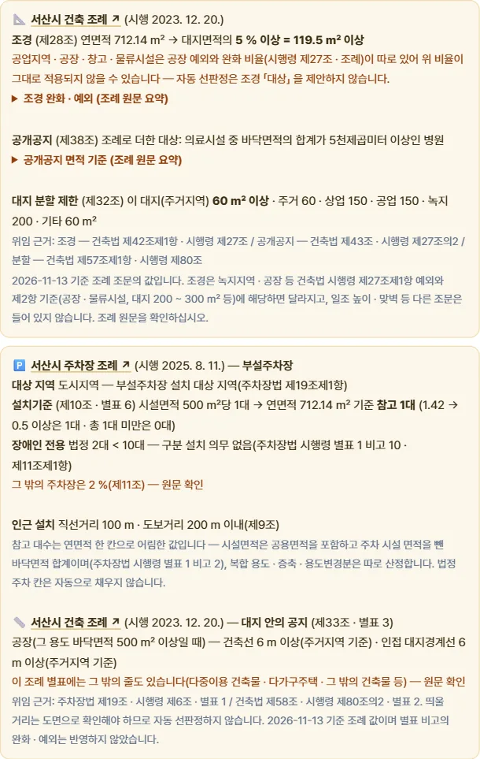
12- 1건축 조례 상자 — 조경 면적 비율(대지면적 · 연면적 구간) · 공개공지 조례 대상 · 대지 분할 최소면적과 조문
- 2주차장 조례 · 대지 안의 공지 상자 — 부설주차장 대상 지역 · 설치기준과 참고 대수 · 장애인 전용 · 인근 설치 / 건축선 · 인접 대지경계선에서 띄울 거리
- 건축 조례(v6.1.6) — 조경 비율은 대지면적 200 ㎡ 이상일 때 연면적 구간으로 보입니다. 공업지역 · 공장 · 창고 · 물류시설은 공장 예외와 완화 비율이 따로 있어 자동 선판정이 조경 「대상」을 제안하지 않습니다.
- 부설주차장(v6.1.8 · v6.1.10) — 용도지역이 주차장법 제19조제1항의 설치 대상 지역(도시지역 · 지구단위계획구역 · 조례로 정하는 관리지역)인지, 주용도의 「시설면적 ○ ㎡당 1대」 기준과 연면적으로 어림한 참고 대수, 장애인 전용 비율(10대 미만 제외), 인근 설치 거리를 보입니다. 법정 주차 칸은 채우지 않습니다. 조례에 설치기준 별표가 없거나 그 용도의 줄이 없으면 주차장법 시행령 별표 1 값을 보이고 그렇다고 적습니다.
- 대지 안의 공지 — 주용도 · 용도지역이 공통 기준(공장 · 창고 500 ㎡ 이상 / 판매 · 숙박 · 문화 및 집회 · 종교 1,000 ㎡ 이상 / 공동주택 / 전용주거지역)에 맞으면 띄울 거리를 보입니다. 주거지역 줄이 따로 있는 조례(서산 · 당진 · 홍성 · 예산 · 태안)는 주거지역이면 그 거리를 보입니다. 도면 사항이라 선판정하지 않습니다.
- 별표를 읽지 못한 조례는 값 없이 「원문 확인」을 보입니다(4-5).
3-6. 종합의견 · 그 밖의 사항
- 1종합의견 — 조서 표지의 「종합의견」 칸
- 2그 밖의 사항
3-7. 체크리스트 탭
- 1진행 표시 — 답한 항목 수 · 입지 · 건축물 · 실질 답
- 2보기 — 전체 · 미답만 · 실질 답만
- 3찾기 — 법령 · 항목 이름
- 4「⚡ 개요로 자동 선판정」
- 5「미답 항목을 「대상법규아님」으로」
- 6「답 모두 지우기」
- 7입지 관련 법령(34법령 48항목) · 아래로 건축물 관련 법령(68법령 111항목)
- 법령마다 번호 · 법령 조문 제목이 띠로 나오고, 그 아래 체크항목마다 세움터와 같은 선택지가 단추로 나옵니다.
- 법령 이름(↗)을 누르면 국가법령정보센터의 현행 조문이 새 창으로 열립니다(102줄 모두 · 인터넷 필요). 자동 선판정 창의 법령 이름도 같습니다.
- 「대상법규아님」은 세움터가 덧붙인 선택지로 점선 테두리로 구분합니다.
- 법령 번호는 세움터 화면 순서입니다. v6.1.14에 보강한 4법령(건축법 제53조의2 · 제61조 · 문화예술진흥법 제9조 · 소방시설법 제8조)도 그 자리에 끼워 번호를 다시 매겼고, 저장 파일은 법령마다 고정 키로 저장해 예전 파일도 같은 줄로 불러옵니다.
- 「미답만」 보기에서는 답을 고르는 동안 그 줄이 바로 사라지지 않아 세부 호까지 고를 수 있습니다.
3-8. 자동 선판정
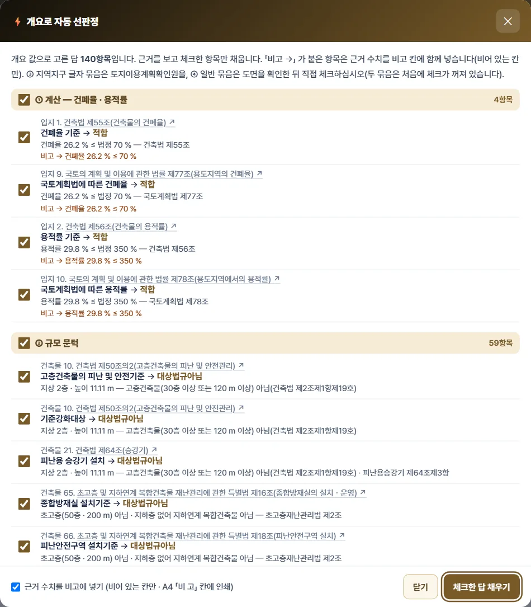
123- 1안내 — 제안 항목 수 · 덮어쓰지 않음
- 2① 계산 — 건폐율 · 용적률 대 법정값
- 3② 규모 문턱 — 층수 · 높이 · 연면적 · 주차
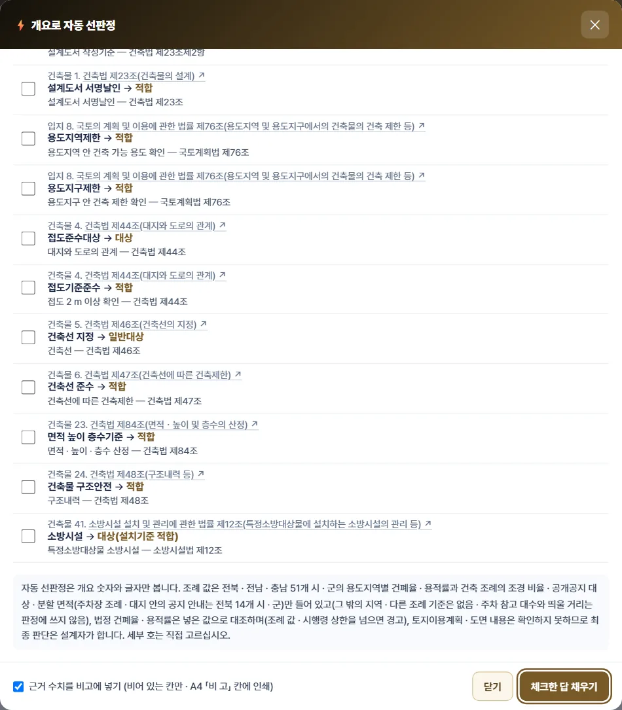
123- 1④ 일반 — 기본 체크 꺼짐(③ 지역지구 글자 묶음도 처음에는 꺼져 있음)
- 2한계 안내 — 조례 값은 51개 시 · 군만 · 토지이용계획 · 도면은 보지 못함
- 3「체크한 답 채우기」
| 묶음 | 예제 항목 | 판정 내용 | 체크 |
|---|---|---|---|
| ① 계산 | 4 | 건폐율 · 용적률을 법정값과 대조해 적합 / 부적합 | 기본 체크 |
| ② 규모 문턱 | 59 | 고층 · 승강기 · 조경 · 공개공지 · 구조안전 · 에너지 절약계획서 · 소방 동의 · 부설주차장 · 일조 · 미술작품 · 성능위주설계 · 내화 · 방화벽 · 외벽 마감 · 빗물 · 중수도 · 편의시설 · 공중화장실 · 부동산개발업과, 주용도 · 건축주 구분으로 대상이 아닌 법령(교통약자 · 다중이용업 · 소음진동 · 위험물 · 범죄예방 · 재생에너지 의무 등) — 문턱 미달은 「대상법규아님」 | 기본 체크 |
| ③ 지역지구 글자 | 45 | 개요의 지역 / 지구 / 구역에 공항 · 군사 · 자연공원 · 문화유산 · 특례 지역 · 도시계획시설 · 가로구역 · 정남일조 구역 같은 글자가 없거나, 분할 · 기계식 주차 · 복수용도 글자가 없거나, 지목이 농지 · 임야가 아니면 「대상법규아님」(또는 「해당없음」) | 기본 꺼짐 — 토지이용계획확인원 확인 후 체크 |
| ④ 일반 | 32 | 설계 · 건축선 · 접도 · 면적 산정 · 구조내력 · 소방시설 · 대지 안전 · 건축설비 · 수도 · 전력 · 전기통신 · 주차장 구조 · 개발행위허가처럼 도면으로 확인해야 하는 항목의 통상 답 | 기본 꺼짐 — 도면 확인 후 직접 체크 |
- 묶음 제목의 체크로 그 묶음 전체를 켜고 끕니다. 항목마다 근거 문구(수치 · 조문)가 붙어 있습니다.
- 이미 답한 항목은 덮어쓰지 않습니다. 개요를 고친 뒤 다시 눌러도 새로 고를 항목만 나옵니다.
- 개요에 빈 칸이 있으면 「개요에 넣으면 더 판정되는 칸」이 나옵니다(예: 법정 용적률). 지하층이 있는데 용적률 산정용 연면적이 비어 있으면 용적률 판정을 보류하고 그 칸을 넣으라고 알립니다.
- 넣은 법정 건폐율 · 용적률이 조례 값(51개 시 · 군)이나 용도지역별 시행령 상한보다 크면 붉은 경고가 나옵니다. 답은 바꾸지 않으니 값을 다시 확인하십시오. 법정값이 조례 값과 같으면 근거에 「법정값 = ○○시 도시계획 조례 제○조」가 붙습니다.
- 넣은 법정 주차 대수가 조례 기준 참고 대수보다 작거나, 용도지역이 부설주차장 설치 대상 지역 밖으로 보이면 경고가 나옵니다(답은 바꾸지 않음).
- 근거 수치를 비고에 — 창 아래 「근거 수치를 비고에 넣기」 체크(기본 켜짐)를 두면 채운 항목의 비고 칸에 근거 수치(예: 「건폐율 ○ % ≤ 법정 ○ % — ○○시 도시계획 조례 제○조」)가 들어가 A4 「비 고」에 인쇄됩니다. 이미 쓴 비고는 바꾸지 않습니다.
- 건축주 구분(v6.1.15) — 개요 탭 「건축주 구분」에 민간 · 공공을 고르면 재생에너지 설비 의무 · 야생생물 피해방지 · 개방주차장 · 차양을 판정합니다. 비워 두면 「개요에 넣으면 더 판정되는 칸」에 나옵니다. 예제는 세움터 견본 답에 맞춰 「민간」을 골랐습니다.
- 예제는 지역 / 지구 / 구역 글자가 토지이용계획확인원과 같다고 보고 ③ 묶음 체크를 켠 뒤 채웠습니다.
- 세부 호 자동 선택(v6.1.17) — 개발행위허가(국토계획법 제56조)는 「1항 1호」(건축)를, 개요의 「토지 형질변경」이 「필요」이면 「1항 2호」도 고릅니다. 개발행위허가 기준(제58조)은 용도지역에 따라 「3항 1호」(주거 · 상업 · 공업) · 「3항 2호」(자연녹지 · 생산관리 · 계획관리) · 「3항 3호」(그 밖)를, 건폐율 · 용적률(제77 · 78조)은 용도지역의 목(예: 일반공업지역 → 「1항 1호 다목」)을, 녹지가 걸친 대지는 제84조 · 건축법 제54조 「3항」을 고릅니다. 창에는 「→ 적합 (■1항 1호 다목)」처럼 보이고, 「체크한 답 채우기」를 누르면 세부 호도 채워집니다. 그 밖의 항목은 직접 고릅니다(3-9). 판정 기준은 4-4.
- 개요 칸 3개(v6.1.17) — 「토지 형질변경(필요 / 필요없음)」 · 「접한 도로 너비 (m)」 · 「조경 (공사개요의 법정 비율)」. 공사개요 PDF에 있으면 읽어 채웁니다. 조서에는 인쇄되지 않고 저장 파일에는 들어갑니다. 도로 너비가 4 m 이상이면 접도(건축법 제44조) 「대상」을 ② 묶음으로 제안합니다.
3-9. 답 · 세부 호 · 비고
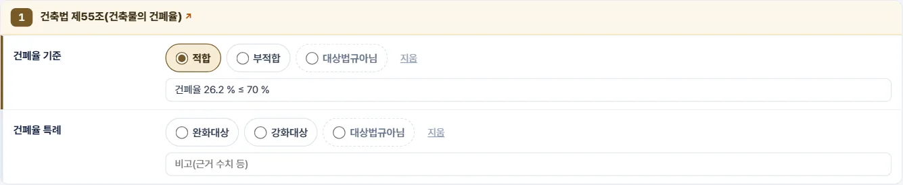
123- 1고른 답 — 왼쪽 띠와 단추 색으로 표시
- 2비고 — 근거 수치 등(A4 「비 고」 칸에 인쇄)
- 3법령 이름(↗) — 국가법령정보센터 현행 조문을 새 창으로
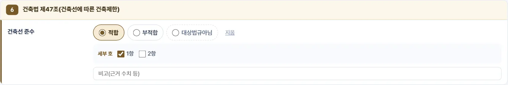
12- 1선택지
- 2세부 호 — 고른 선택지에 딸린 항 · 호를 체크
세부 호가 있는 선택지를 고르면 아래에 호 선택 칸이 나옵니다(예: 「건축선 준수」 → 「적합」 → 1항 · 2항). 다른 선택지로 바꾸면 세부 호 체크는 지워집니다. 「지움」은 그 항목의 답만 지우고 비고는 남깁니다.
3-10. 진행 스트립
- 1입지 관련 답한 수
- 2건축물 관련 답한 수
- 3전체
- 4실질 답 — 「대상법규아님」을 뺀 답
- 5미답
3-11. 조서 · 체크리스트 출력
- 1「🖨️ 인쇄 / PDF 저장」 — 브라우저 인쇄 창(대상 프린터에서 「PDF로 저장」)
- 2「🖼️ JPG 저장」 — 쪽마다 그림 파일
- 3「세부 호 선택지 모두 인쇄」 — 끄면 고른 호만 인쇄
- 4「「대상법규아님」 줄 빼고 인쇄(선별 제출용)」
- 5A4 조서 미리보기
- 인쇄는 A4 세로 · 흰 배경입니다. 표의 선은 한 겹 굵기로 고르게 나오고, 표가 다음 쪽으로 넘어가면 머리행이 반복됩니다.
- 「위와 같이 한국건축규정 체크리스트를 작성하여 첨부합니다」 · 날짜 · 조사 / 검사자 · 꼬리말은 마지막 쪽 맨 아래에 붙습니다.
- JPG가 여러 쪽이면 쪽을 골라 저장하는 창이 열립니다.
3-12. A4 구성
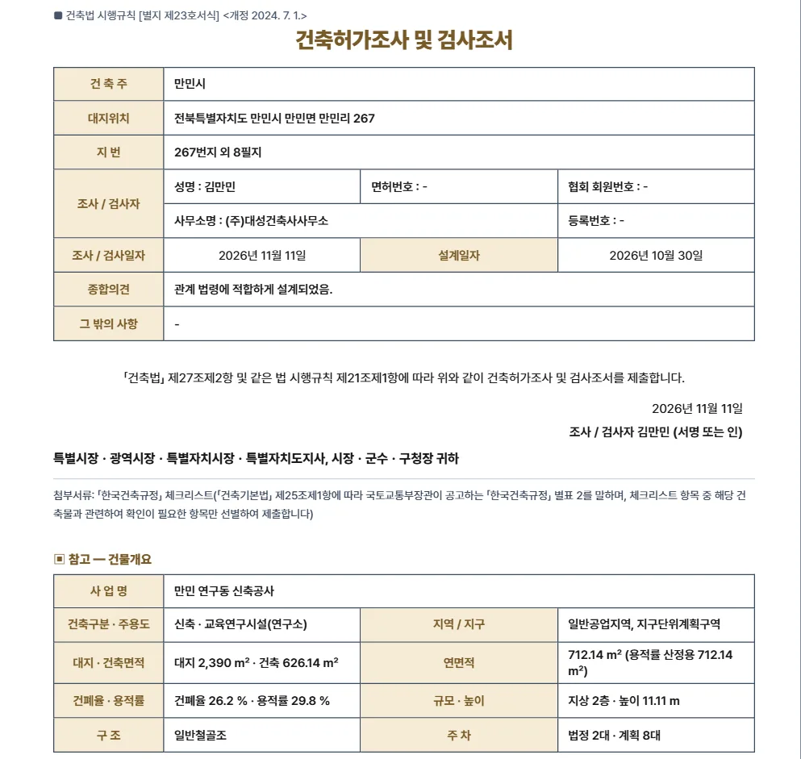
1234- 1조서 표지 — 건축주 · 대지위치 · 지번 · 조사/검사자 · 일자 · 종합의견 · 그 밖의 사항
- 2제출 문구 · 날짜 · 서명란 · 수신(허가권자)
- 3첨부서류 안내(서식 원문)
- 4참고 — 건물개요 요약표
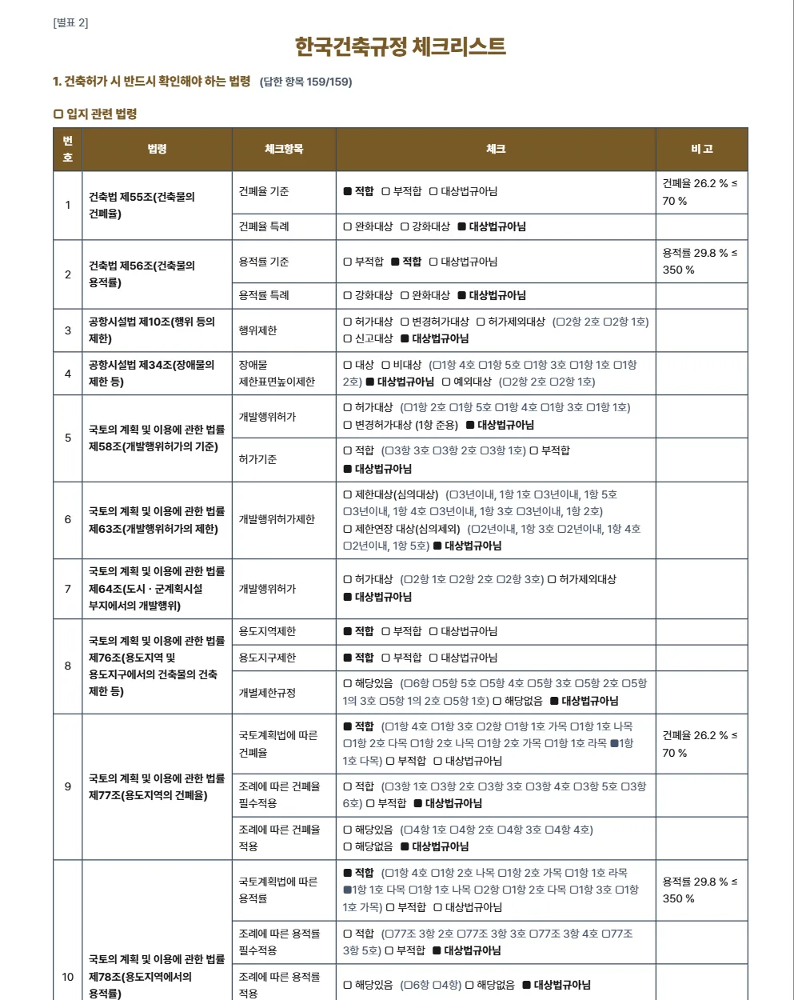
123- 1제목 · 「1. 건축허가 시 반드시 확인해야 하는 법령」
- 2답한 항목 수
- 3번호 · 법령 · 체크항목 · 체크(■ 고름 / □) · 비고
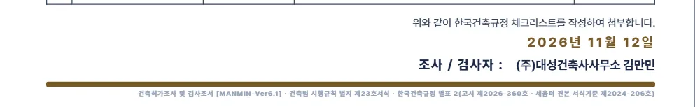
1234- 1첨부 문구
- 2날짜(조사 / 검사일자)
- 3조사 / 검사자 — 사무소명 · 성명
- 4꼬리말 — 도구 · 서식 · 서식기준
3-13. 선별 제출
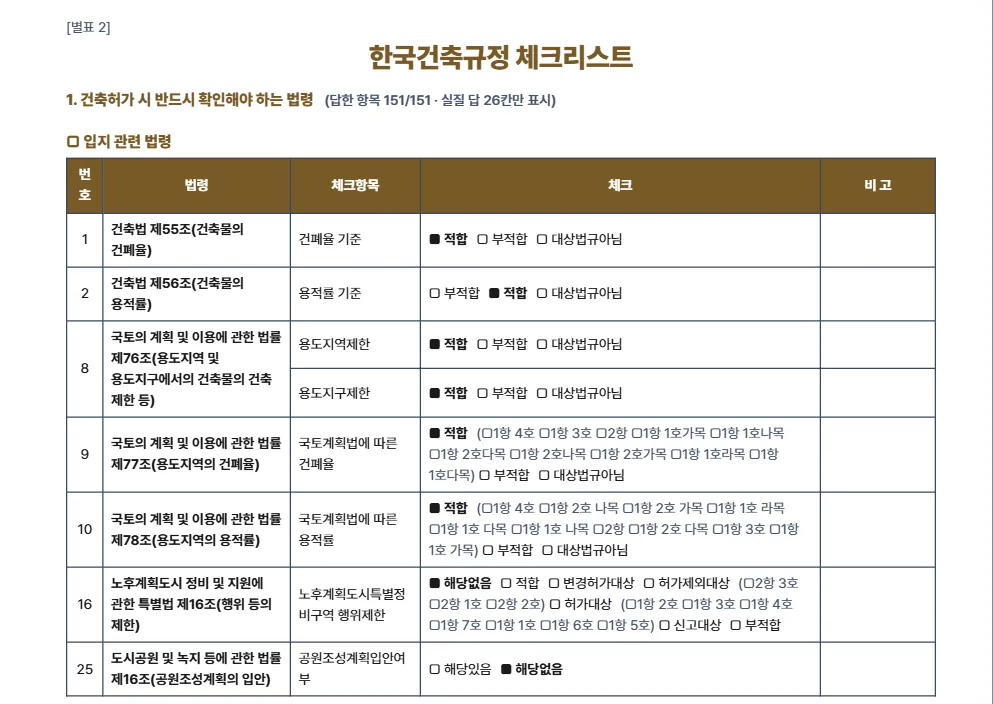
1- 1실질 답만 표시 — 남은 줄 수
서식의 첨부서류 안내는 「체크리스트 항목 중 해당 건축물과 관련하여 확인이 필요한 항목만 선별하여 제출」입니다. 이 체크를 켜면 「대상법규아님」으로 답한 줄과 미답 줄을 빼고 인쇄합니다. 예제: (답한 항목 159/159 · 실질 답 26칸만 표시) → 3쪽.
3-14. 근거 탭
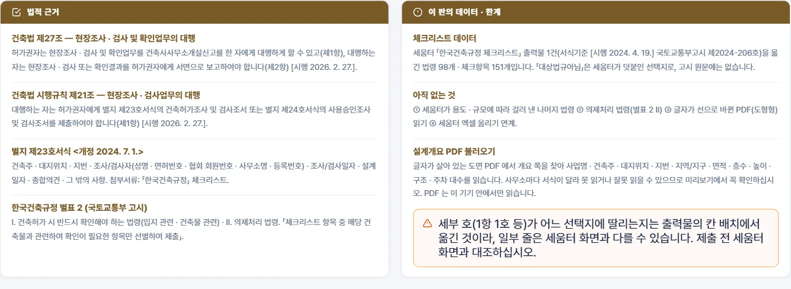
12- 1법적 근거 — 건축법 제27조 · 시행규칙 제21조 · 별지 제23호서식 · 한국건축규정 별표 2
- 2이 판의 데이터 · 한계 — 데이터 출처 · 법령 링크와 대조 기준일 · 조례 목록(도별 기준일 · 시 · 군별 도시계획 · 건축 · 주차장 조례 이름 ↗ · 시행일 · 조문) · 아직 없는 것 · PDF 불러오기
3-15. 작성 안내 창
오른쪽 아래 「📋 작성 안내」 단추를 누르면 3개 탭이 있는 안내 창이 열립니다.
- 1이용방법
- 2서식 구조
- 3주의사항
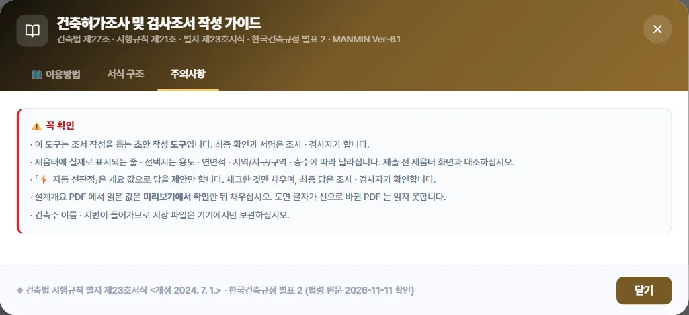
3-16. 모바일
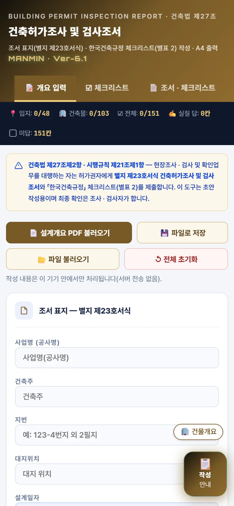
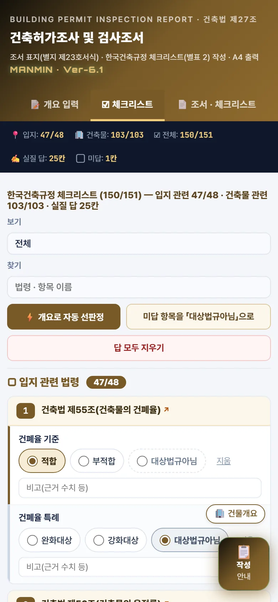
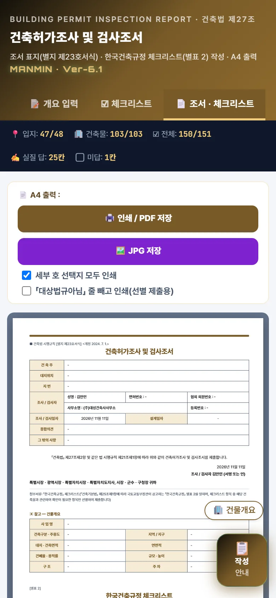
폭이 좁은 화면에서는 카드와 단추가 한 줄로 쌓이고, 조서는 화면 폭에 맞춰 줄여 보입니다. 탭 막대는 좌우로 밀어 「근거」 · 「매뉴얼」을 엽니다. 인쇄 · PDF는 PC와 같은 A4로 나옵니다.
04기술기준 해설
법령 원문은 법령 정보(LawMCP)로 조회했습니다 — 근거 법령 · 서식은 2026-11-11, 체크리스트 102줄의 근거 표기 · 자동 선판정 문턱 · 전북 조례 값은 2026-11-12, 전남 · 충남 조례 값과 보강 4법령 · 자동 선판정 전체 항목 문턱은 2026-11-13(그날 시행본).
4-1. 근거 법령
| 법령 | 공포 · 시행 | 도구가 쓰는 내용 |
|---|---|---|
| 건축법 | 2025.8.26. 공포 · 2026.2.27. 시행 | 제27조 현장조사 · 검사 및 확인업무의 대행 — ① 허가권자는 건축사사무소개설신고를 한 자에게 대행하게 할 수 있음 ② 대행하는 자는 결과를 국토교통부령으로 정하는 바에 따라 허가권자에게 서면으로 보고 ③ 수수료 |
| 건축법 시행규칙 | 2026.2.27. 공포 · 시행 | 제21조 ① 별지 제23호서식 건축허가조사 및 검사조서(또는 제24호 사용승인조사 및 검사조서) 제출 ② 적합 표시 조서를 받으면 지체 없이 허가서 교부 ③ 수수료 |
| 별지 제23호서식 | <개정 2024. 7. 1.> | 건축주 · 대지위치 · 지번 · 조사/검사자 · 조사/검사일자 · 설계일자 · 종합의견 · 그 밖의 사항 · 첨부서류(한국건축규정 체크리스트) |
| 건축기본법 | 2025.10.1. 시행 | 제25조 한국건축규정의 공고 등 — 건축물 관련 규정을 통합한 한국건축규정 공고 · 정보체계 운영 |
| 한국건축규정 | 국토교통부고시 제2026-360호 · 2026.7.8. 시행 | 제2조 ① 한국건축규정은 별표 1 ② 민원인 · 허가권자는 준수 여부 확인에 별표 2를 활용 · 제3조 실제 적용 시점의 정보체계(세움터) 내용을 적용 |
4-2. 조서 서식
도구의 A4 1쪽은 별지 제23호서식의 칸 순서를 그대로 따릅니다 — 건축주 → 대지위치 → 지번 → 조사 / 검사자(성명 · 면허번호 · 협회 회원번호 / 사무소명 · 등록번호) → 조사 / 검사일자 · 설계일자 → 종합의견 → 그 밖의 사항 → 제출 문구 → 날짜 · 서명 → 수신 → 첨부서류. 건물개요 요약표는 서식에 없는 참고 표로, 조서 뒤에 붙습니다.
4-3. 한국건축규정 체크리스트 (별표 2)
| 구분 | 내용 |
|---|---|
| Ⅰ. 건축허가 시 반드시 확인해야 하는 법령 | 입지 관련 · 건축물 관련 — 이 도구가 다루는 범위(세움터 견본 2건 102법령 · 159항목: 입지 34법령 48항목 · 건축물 68법령 111항목) |
| Ⅱ. 의제처리 법령 | 이 판에는 없음(다음 판) |
| 선별 제출 | 체크리스트 항목 중 해당 건축물과 관련하여 확인이 필요한 항목만 선별하여 제출(별지 제23호서식 첨부서류) |
| 「대상법규아님」 | 세움터가 체크항목마다 덧붙이는 선택지 — 고시 원문 별표 2에는 없음 |
세움터는 용도 · 연면적 · 지역지구 · 층수에 따라 표시할 법령을 걸러 냅니다. 견본 2건에서 걸러진 법령(고시 별표 1의 140개 중 나머지 38개)은 이 판에 없습니다.
4-4. 자동 선판정 기준
| 항목 | 판정 문턱 | 근거 |
|---|---|---|
| 건폐율 · 용적률 | 계산값 ≤ 법정값이면 적합 · 지하층이 있고 용적률 산정용 연면적이 비면 용적률은 보류 | 건축법 제55조 · 제56조 · 국토계획법 제77조 · 제78조 · 건축법 시행령 제119조제1항제4호 |
| 법정값 확인(경고만) | 넣은 법정값이 조례 값(51개 시 · 군)이나 용도지역별 시행령 상한보다 크면 경고 — 답은 바꾸지 않음 | 국토계획법 시행령 제84조제1항 · 제85조제1항 · 시 · 군 도시계획 조례 |
| 주차 확인(경고만) | 넣은 법정 주차 대수 < 조례 설치기준 참고 대수, 또는 용도지역이 설치 대상 지역 밖 — 답은 바꾸지 않음 | 주차장법 제19조제1항 · 시행령 제6조 · 별표 1 · 시 · 군 주차장 조례 |
| 고층건축물 | 30층 이상 또는 높이 120m 이상 | 건축법 제2조제1항제19호 · 제50조의2 · 제64조제3항 |
| 초고층 · 지하연계 | 50층 이상 또는 200m 이상 / 지하층이 지하역사 · 지하도상가와 연결 | 건축법 시행령 제2조제15호 · 초고층재난관리법 제2조 |
| 승강기 | 6층 이상이면서 연면적 2,000㎡ 이상(6층은 시행령 제89조 예외 확인) · 비상용은 높이 31m 초과 | 건축법 제64조제1항 · 제2항 |
| 조경 | 대지면적 200㎡ 미만이면 비대상 · 200㎡ 이상이라도 녹지지역, 자연환경보전 · 농림 · 관리지역(지구단위계획구역 제외), 축사, 대지 5,000㎡ 미만 또는 연면적 1,500㎡ 미만 공장이면 예외대상(대수선 · 용도변경은 판정 안 함) | 건축법 제42조제1항 · 시행령 제27조제1항 |
| 조경 — 녹지 걸침 | 녹지지역과 다른 용도지역에 걸친 대지는 ④ 「예외대상」으로 내리고 「녹지 부분만 예외 · 나머지는 조례 조경 비율」을 근거에 적음(녹지만 있으면 ② 그대로) · 개요 「조경(법정)」 값은 근거에 덧붙임 | 건축법 제54조제3항 · 시행령 제27조제1항 |
| 공개공지 | 연면적 5,000㎡ 미만이면 대상 아님(제2호 조례 다중이용시설은 따로 확인) | 건축법 시행령 제27조의2제1항 |
| 구조안전 확인 | 2층(목구조 3층) 이상 · 연면적 200㎡(목구조 500㎡, 창고 · 축사 · 작물 재배사 제외) 이상 · 높이 13m 이상 · 단독주택 · 공동주택은 규모와 무관(제9호) | 건축법 시행령 제32조제2항 |
| 에너지 절약계획서 | 연면적 500㎡ 미만 또는 단독주택이면 비대상(500㎡ 이상의 대상 여부는 판정 안 함) | 녹색건축법 시행령 제10조제1항 |
| 소방 건축허가 동의 | 연면적 400㎡ 이상(학교시설 100㎡ · 노유자 · 수련시설 200㎡ · 정신의료기관 · 의료재활시설 300㎡) · 6층 이상 · 공동주택 · 숙박시설은 규모와 무관(같은 조 제2항 제외 확인) | 소방시설법 시행령 제7조제1항제1호 · 제4호 · 제6호 |
| 친환경차 전용주차 · 충전 | 총주차대수 50대 미만이면 대상 아님 | 친환경자동차법 시행령 제18조의5 |
| 부설주차장 | 법정 대수가 있으면 설치대상 · 계획 ≥ 법정이면 적합 | 주차장법 제19조 |
| 용도지역 미정 · 미세분 | 개요에 세분된 용도지역 이름이 있으면 대상법규아님(「제2종 일반주거지역」처럼 띄어 쓰거나 「1종 일반주거지역」처럼 「제」 없이 써도 읽음) | 국토계획법 제79조 |
| 일조 · 미술작품 · 성능위주설계 | 정북일조: 전용 · 일반주거지역이면 ④ 대상(적합), 아니면 대상법규아님 · 공동주택 아니면 채광 대상법규아님 · 적용제외: 주거지역 아니면 대상법규아님, 2층 · 8 m 초과면 비대상 / 미술작품: 연면적 1만㎡ 미만 / 성능위주설계: 신축 아님, 또는 3만㎡ · 30층 · 120 m 미만 · 지하 없음 | 건축법 제61조제1 · 2 · 4항 · 문화예술진흥법 시행령 제12조 · 소방시설법 시행령 제9조 |
| 지목 | 전 · 답 · 과수원이면 농지전용허가 ④ 허가대상, 아니면 ③ 대상법규아님 · 임야 아니면 입목벌채 ③ 대상법규아님 · 건축(대수선 · 용도변경 제외)이면 개발행위허가 ④ 허가대상 · 기준 적합 | 농지법 제2 · 34 · 37조 · 산림자원법 제36조 · 국토계획법 제56 · 58조 |
| 농지전용 제한 · 접도 | 농지라도 도시지역 · 계획관리지역 · 개발진흥지구이면 농지전용 제한 ③ 대상법규아님(보전관리 등은 판정 보류) / 개요 「접한 도로 너비」가 4 m 이상이면 접도 ② 「대상」, 4 m 미만이면 ④에 「시행령 제3조의3 확인」 | 농지법 제37조제1항 단서 · 건축법 제44조 · 시행령 제3조의3 |
| 대지 안의 공지 | 별표 2 가 ~ 마목(전용 · 일반공업지역 밖 공장 · 창고 500㎡ 이상, 판매 · 숙박 등 1,000㎡ 이상, 공동주택, 전용주거지역, 연면적 5,000㎡ 이상 등)이 아니면 ③ 대상법규아님(바목은 조례 확인) · 해당하면 ④ 적합 | 건축법 제58조 · 시행령 제80조의2 · 별표 2 |
| 세부 호 | 제56조: 1항 1호(+ 형질변경 「필요」면 1항 2호) · 제58조: 3항 1 · 2 · 3호(시가화 · 유보 · 보전 용도) · 제77 · 78조: 용도지역의 목 · 제84조 · 건축법 제54조: 녹지 걸침 3항 | 국토계획법 제56 · 58 · 77 · 78 · 84조 · 시행령 별표 1의2 · 건축법 제54조 |
| 내화 · 방화벽 | 3층 미만 · 지하층 없음이고 시행령 제56조제1항 해당 호 문턱(공장 2,000 · 판매 · 운동 · 창고 등 500 · 집회 · 종교 · 주점 · 장례 200 · 2층 이상 주거 · 의료 · 숙박 등 400㎡)에 못 미치면 대상법규아님(3층 이상 · 지하층이면 ④ 대상) · 연면적 1,000㎡ 미만이면 방화벽 대상법규아님 | 건축법 시행령 제56조 · 제57조 |
| 외벽 마감 · 창호 | 3층 미만 · 높이 9 m 미만이고 의료 · 교육연구 · 노유자 · 수련 · 공장 · 창고 · 위험물 · 자동차 · 필로티 · 상업지역 2,000㎡ 이상 근생 등이 아니면 대상법규아님 | 건축법 시행령 제61조제2 · 3항 |
| 실내건축 · 범죄예방 | 연면적 3,000㎡ · 16층 미만이고 휴게음식점 · 오피스텔 · 숙박 아님 / 시행령 제63조의7 용도 아님(「근린생활시설」만 쓰면 보류) | 건축법 시행령 제61조의2 · 제63조의7 |
| 주용도로 대상 아님 | 교통약자(여객시설 아님) · 다중이용업(시행령 제2조 업종 아님) · 소음 · 진동(공장 아님 — 제조업소는 배출시설 확인 안내) · 방음시설 · 위험물 · 공영주차장 · 노외 · 주차전용 · 재생에너지 권고 · 부설주차장 용도변경(용도변경 아님) | 교통약자법 제2 · 9조 · 다중이용업소법 시행령 제2조 · 소음진동법 제7 · 9 · 12 · 40조 · 위험물안전관리법 제5조 · 주차장법 제12 · 12조의2 · 19조의4 · 재생에너지법 제12조 · 제12조의13 |
| 물 · 수도 | 빗물: 지붕 1,000㎡ 운동장 · 체육관 · 공공업무 · 청사, 공동주택 건축면적 1만㎡ · 학교 5천㎡, 골프장, 대규모점포가 아니면 대상법규아님 · 중수도: 연면적 6만㎡ 미만(공장 · 발전 아님) · 절수설비: 대상 | 물재이용법 제8 · 9조 · 시행령 제10 · 11조 · 수도법 제15조 |
| 편의 · 화장실 · 개발업 | 편의시설 별표 1 대상시설 아님(제조업소 · 창고 · 단독주택 등) · 장애인전용주차 법정 10대 미만 · 공중화장실 적용 범위 아님(근생 · 업무 2,000㎡, 집회 · 병원 · 학교 등 1,000㎡ 미만) · 부동산개발업 연면적 2,000㎡ · 대지 3,000㎡ 미만 | 편의증진법 시행령 별표 1 · 제17조 · 주차장법 시행령 별표 1 비고 · 공중화장실법 제3조 · 시행령 제3조 · 부동산개발업법 제4조 |
| 건축주 구분 · 차양 | 민간이면 재생에너지 설비 의무 · 야생생물 대상법규아님(개방주차장은 ④) · 공공이면 ④ 대상 제안(재생에너지는 1,000㎡ 이상 신축 · 증축 · 개축) · 차양은 공공 · 3,000㎡ 이상 · 업무 · 교육연구가 아니면 대상법규아님 | 재생에너지법 제12조제2항 · 시행령 제15조 · 야생생물법 제8조의2 · 주차장법 제19조제13항 · 녹색건축법 제14조의2 · 시행령 제10조의2 |
| 부설주차장 설치계획서 | 법정 대수 1대 이상이면 ④ 묶음으로 대상 제안(기본 꺼짐 — 세움터 견본 2건의 답이 「대상」 · 「비대상」으로 갈림) | 주차장법 제19조의2 |
| ③ 개요 글자 | 특례 지역 · 제77 · 78조 조례 지역 · 개발행위 제한 · 도시계획시설 · 제76조제5항 지역 · 맞벽 · 가로구역 · 정남일조 구역 · 녹색건축 완화 · 분할 · 기계식 주차 · 복수용도 글자가 없으면 대상법규아님 | 국토계획법 제63 · 64 · 76 · 77 · 78조 · 건축법 제19조의2 · 제55 · 56 · 57 · 59 · 60조 · 제61조제3항 · 녹색건축법 제15조 · 주차장법 제19조의5 |
| 둘 이상 지역에 걸침 | 용도지역 이름이 하나뿐이고 다른 지역 글자가 없으면 대상법규아님 · 둘 이상이고 녹지가 걸치면 제84조 「특수대상」 · 제54조 「특수대상(적합)」 ■3항, 녹지가 없으면 제54조 「일반대상(적합)」(③ 묶음) | 국토계획법 제84조 · 건축법 제54조 |
| 법정값이 빈 건폐율 · 용적률 | 법정 칸이 비어도 걸친 모든 용도지역의 조례 값을 알면, 계획 값이 그 가운데 가장 작은 값 이하일 때 ③ 「적합」(세부 호는 용도지역의 목) | 국토계획법 제77 · 78 · 84조 · 각 시 · 군 도시계획 조례 |
- 문턱에 못 미치면 세움터 견본 관례대로 「대상법규아님」을 고릅니다.
- 「둘 이상 지역에 걸침」과 지역지구 글자(공항 · 군사 · 자연공원 등)는 ③ 묶음이라 처음에 체크가 꺼져 있습니다. 개요에 글자가 없다는 것만으로는 해당 없다고 단정할 수 없으므로 토지이용계획확인원을 본 뒤 켭니다.
- 주용도 · 규모로 대상이 아님이 분명한 것만 ② 묶음에서 「대상법규아님」을 고릅니다. 같은 건물에 다른 용도 · 영업이 들어오면(예: 근린생활시설에 음식점) 해당 법령을 따로 확인하십시오.
- ④ 일반 묶음은 대지 안전 · 건축설비 · 수도 · 전력 · 전기통신 · 주차장 구조 등의 통상 답을 제안합니다(기본 꺼짐). 대상 건축물이 아니면 「대상법규아님」으로 바꾸십시오.
- 예제의 선판정 답 140항목을 세움터 견본 답과 대조하면 같음 126 · 다름 13 · 견본이 비워 둔 칸 1입니다. 다름 13항목은 모두 ④ 일반 묶음(기본 꺼짐 — 예제는 채우지 않음)으로, 견본 건은 이 항목들을 「대상법규아님」으로 적었습니다.
4-5. 조례 값
| 항목 | 내용 |
|---|---|
| 지역 | 전북특별자치도 14개(전주시 · 군산시 · 익산시 · 정읍시 · 남원시 · 김제시 · 완주군 · 진안군 · 무주군 · 장수군 · 임실군 · 순창군 · 고창군 · 부안군) · 전남광주통합특별시(종전 전라남도, 시 · 군 조례는 그대로) 22개(목포시 · 여수시 · 순천시 · 나주시 · 광양시 · 담양군 · 곡성군 · 구례군 · 고흥군 · 보성군 · 화순군 · 장흥군 · 강진군 · 해남군 · 영암군 · 무안군 · 함평군 · 영광군 · 장성군 · 완도군 · 진도군 · 신안군) · 충청남도 15개(천안시 · 공주시 · 보령시 · 아산시 · 서산시 · 논산시 · 계룡시 · 당진시 · 금산군 · 부여군 · 서천군 · 청양군 · 홍성군 · 예산군 · 태안군) — 51곳 |
| 들어 있는 값 | ① 도시계획(군계획) 조례의 「용도지역 안에서의 건폐율 · 용적률」 조문 제1항 각 호의 값(용도지역 21종) ② 건축 조례의 조경 면적 비율 · 공개공지 조례 대상 · 대지 분할 최소면적 ③ 주차장 조례의 부설주차장 설치기준 · 관리지역 범위 · 장애인 전용 비율 · 인근 설치 거리와 건축 조례의 대지 안의 공지 거리(③은 안내만) |
| 기준일 | 전북 2026-11-12 · 전남 · 충남 2026-11-13 (자치법규 원문 수집 · 국가법령정보센터 현행본과 조례 이름 대조). 조례가 그 뒤 개정되어도 값은 자동으로 바뀌지 않습니다 |
| 조례 · 시행일 · 조문 | 51곳의 조례 이름(↗ 원문) · 시행일 · 조문은 앱 근거 탭의 「조례 목록」 표에 도별로 있습니다. 전북 도시계획 조례 예: 전주시 도시계획 조례(2026. 4. 13. · 제45조 · 제47조) · 군산시 도시계획 조례(2026. 11. 9. · 제55조 · 제60조) · 익산시 도시계획 조례(2025. 12. 31. · 제55조 · 제60조) · 정읍시 도시계획 조례(2026. 11. 6. · 제53조 · 제58조) · 남원시 도시계획 조례(2026. 9. 18. · 제57조 · 제62조) · 김제시 도시계획 조례(2025. 12. 16. · 제57조 · 제62조) · 완주군 계획 조례(2025. 12. 18. · 제47조 · 제52조) · 진안군 계획 조례(2026. 3. 30. · 제53조 · 제55조) · 무주군 군계획 조례(2025. 12. 10. · 제42조 · 제47조) · 장수군 군계획 조례(2026. 10. 1. · 제57조 · 제62조) · 임실군 계획 조례(2026. 2. 25. · 제44조 · 제45조) · 순창군 계획 조례(2026. 8. 18. · 제55조 · 제59조) · 고창군 계획 조례(2025. 12. 31. · 제57조 · 제62조) · 부안군 군계획 조례(2025. 7. 18. · 제57조 · 제62조) — 괄호 안은 시행일 · 건폐율 조 · 용적률 조 |
| 상한과의 관계 | 건폐율 · 용적률은 국토계획법 시행령 제84조제1항 · 제85조제1항 상한 이하, 대지 안의 공지 거리는 건축법 시행령 별표 2 범위 안인지 검사해 넣었습니다 |
| 값이 없는 호 | 전주시(자연환경보전지역) · 임실군(14개 용도지역 호만) · 목포시(관리 · 농림 · 자연환경보전지역) · 계룡시(관리 · 농림지역) — 「이 조례에 이 용도지역 호가 없음」으로 표시 · 천안시 도시계획 조례는 시행 예정본만 조회되어 값 없음 |
| 단서 | 「다만, …」 단서는 글자만 보입니다(값에 반영하지 않음). 무주군 건폐율의 자연녹지 · 계획관리지역은 「단서가 있습니다 — 원문 확인」으로만 표시 |
| 싣지 않은 주차 · 공지 값 | 원문이 분명하지 않은 줄: 완주군 창고 준공업지역 건축선 · 순창 · 부안 · 보성 · 광양 인접 대지 아파트 · 군산 그 밖의 건축물 — 「원문 확인」으로 표시. 조례 별표에 그 용도 줄이 없으면(여수 · 구례 · 신안 · 무안 창고) 또는 일반 설치기준 조문이 없으면(강진) 주차장법 시행령 별표 1 값을 보이고 그렇다고 적음 |
| 들어 있지 않은 것 | 51곳 밖 지역(종전 광주광역시 5개 구 포함) · 지구단위계획 · 성장관리계획 · 용도지구 · 완화/강화 특례(다른 항 · 다른 조문) · 별표 비고의 완화 · 예외 · 주택 · 골프장 등 면적 기준이 아닌 주차 시설 |
4-6. PDF 불러오기 규칙
| 항목 | 규칙 |
|---|---|
| 읽는 PDF | 글자가 살아 있는 PDF(CAD에서 글꼴을 글자로 내보낸 것) — 글자 수 30자 미만이면 도형형으로 보고 직접 입력 안내 |
| 개요 쪽 찾기 | 칸 이름 13종 중 몇 개가 있는지 + 「건축개요 · 설계개요」 제목 → 가장 높은 쪽(3점 미만이면 「찾지 못함」) |
| 값 짝짓기 | 같은 줄 오른쪽 칸 → 같은 열 아래 칸 · 한 글자씩 띄운 칸 이름(「지 번」)은 이어 붙였을 때 아는 이름일 때만 · 다른 칸 이름을 만나면 멈춤 |
| 읽는 칸 | 사업명 · 건축주 · 대지위치 · 지번 · 건축구분 · 주용도 · 지역/지구/구역 · 지목 · 대지 · 건축 · 연면적 · 용적률 산정용 연면적 · 층수 · 최고높이 · 구조 · 주차 법정 · 계획 · 법정 건폐율 · 용적률 |
| 층수 · 주차 보강 | 층수 칸이 없으면 「층별」 표 열의 1층 · 지하1층 · B1로 지상 · 지하 층수 · 주차 줄에 계획만 있으면 쪽 전체 산출식에서 법정 · 「= 3.31대」 같은 소수는 주차장법 시행령 별표 1 비고 6(0.5 이상 1대)으로 반올림 |
| 개인정보 | 주민등록번호 · 법인등록번호 모양 글자는 어떤 칸에도 넣지 않음 · PDF는 기기 밖으로 보내지 않음 |
4-7. 다루지 않는 것
- 별표 2 Ⅱ. 의제처리 법령, 세움터가 용도 · 규모에 따라 표시하는 나머지 법령(견본 2건에 없던 38개)
- 별지 제24호서식 사용승인조사 및 검사조서
- 51개 시 · 군 밖의 조례, 조례 단서 · 특례 · 별표 비고의 판정, 주차 대수 · 띄울 거리의 확정(안내만 함)
- 토지이용계획확인원 · 도면 내용의 판정 — 자동 선판정은 개요 숫자와 글자만 봅니다
- 세움터 엑셀 올리기 연계, 글자가 선으로 바뀐 PDF 읽기
05실무 작업 방법
5-1. 단계별 절차
| 단계 | 도구 사용 |
|---|---|
| 현장조사 의뢰 접수 | 설계자에게 설계개요(건축개요) 쪽이 든 PDF와 토지이용계획확인원을 받음 |
| 개요 작성 | 「설계개요 PDF 불러오기」 → 미리보기 확인 → 채우기 · 지역 / 지구 / 구역은 토지이용계획확인원 글자 그대로 · 법정 건폐율 · 용적률은 조례 값으로 확인(전북 14개 시 · 군은 조례 값 안내와 대조하거나 「조례 값 채우기」) |
| 선판정 | 「⚡ 개요로 자동 선판정」 → ① · ② 묶음 근거를 읽고 채움 · ③ 지역지구 글자 묶음은 토지이용계획확인원과 대조한 뒤 체크 · ④ 일반 묶음은 도면을 보고 해당 항목만 체크 · 붉은 경고가 있으면 법정값부터 확인 |
| 체크리스트 마무리 | 「미답만」 보기로 남은 항목 처리 · 세부 호 · 비고(근거 수치) 기입 · 해당 없는 줄은 「미답 항목을 대상법규아님으로」 |
| 세움터 대조 | 세움터 체크리스트 화면과 줄 · 선택지 대조(견본에 없던 법령이 뜨면 세움터에서 직접 작성) |
| 출력 · 보관 | 전체 또는 선별 인쇄 → 서명 · 날인 · 「파일로 저장」으로 현장별 .json 보관 |
5-2. 제출 전 확인
- 조사 / 검사자 칸(면허번호 · 협회 회원번호 · 등록번호)이 본인 것인지
- 조사 / 검사일자와 설계일자가 맞는지 — 서명란 날짜는 조사 / 검사일자를 씁니다
- 건폐율 · 용적률 계산 줄이 「적합」이고, 법정값이 조례 값인지 — 조례 값 안내에 붉은 글씨(넣은 값이 조례 값과 다름)가 있으면 지구단위계획 · 특례 때문인지 확인
- 자동 선판정으로 넣은 답이 도면 · 토지이용계획과 어긋나지 않는지(특히 ③ 지역지구 글자 묶음)
- 세움터 화면에만 있는 줄이 빠지지 않았는지
- 선별 제출이면 「대상법규아님 줄 빼고 인쇄」 체크 · 미답 0칸
5-3. 예제 결과
| 항목 | 예제 |
|---|---|
| 조서 표지 | 건 축 주 만민시 / 대지위치 전북특별자치도 만민시 만민면 만민리 267 / 지 번 267번지 외 8필지 |
| 건물개요 | 사 업 명 만민 연구동 신축공사 / 건축구분 · 주용도 신축 · 교육연구시설(연구소) 지역 / 지구 일반공업지역, 지구단위계획구역 / 대지 · 건축면적 대지 2,390 ㎡ · 건축 626.14 ㎡ 연면적 712.14 ㎡ (용적률 산정용 712.14 ㎡) / 건폐율 · 용적률 건폐율 26.2 % (법정 70 %) · 용적률 29.8 % (법정 350 %) 규모 · 높이 지상 2층 · 높이 11.11 m / 법정값 근거 건폐율 70 % — 입력값 · 용적률 350 % — 입력값 |
| 체크리스트 | (답한 항목 159/159) · 실질 답 26칸 |
| A4 | 전체 10쪽 · 선별 3쪽 |
06문제 해결·FAQ
| 증상 | 해결 |
|---|---|
| 「글자 정보가 없습니다」가 나온다 | CAD에서 글자를 선으로 내보낸 PDF입니다. 설계자에게 글자형 PDF를 받거나 직접 입력하십시오. |
| 「설계개요 쪽을 찾지 못했습니다」 | 개요 칸 이름이 3개 미만인 PDF입니다. 개요 쪽만 따로 저장한 PDF로 다시 하거나 직접 입력하십시오. |
| 읽은 값이 엉뚱한 칸에 들어갔다 | 사무소마다 서식이 달라 생깁니다. 미리보기에서 값을 고치거나 그 칸의 「채움」 체크를 끄고 채우십시오. |
| 조례 값 안내가 나오지 않는다 | 대지위치 칸이 비어 있으면 나오지 않습니다. 「충청남도 ○○시 …」처럼 시 · 군 이름을 넣으십시오. 51곳 밖이면 「들어 있지 않습니다」가 나옵니다. |
| 주차 참고 대수가 법정 칸에 안 들어간다 | 참고 대수는 연면적 한 칸으로 어림한 값이라 법정 칸을 채우지 않습니다. 시설면적 · 용도별로 산정한 대수를 직접 넣으십시오. |
| 조례 값 대신 안내 문구만 나온다 | 「지역 / 지구 / 구역」 칸에 용도지역이 없거나 둘 이상이면 값을 찾지 않습니다. 걸치는 대지는 국토계획법 제84조에 따라 직접 계산해 넣으십시오. 법정 칸을 비워 두어도 계획 값이 걸친 용도지역 조례 값 가운데 가장 작은 값 이하이면 선판정이 「적합」을 제안합니다. |
| 넣은 값이 조례 값과 다르다는 붉은 글씨 | 지구단위계획 · 성장관리계획 · 완화 특례로 다른 값이면 그대로 두면 됩니다. 아니면 「조례 값 채우기」로 바꾸십시오(바꾸기 전에 묻습니다). |
| ③ 묶음이 체크되어 있지 않다 | v6.1.4부터 ③ 지역지구 글자 묶음은 처음에 꺼져 있습니다. 토지이용계획확인원을 확인한 뒤 묶음 제목의 체크를 켜십시오. |
| 법령 이름을 눌러도 열리지 않는다 | 국가법령정보센터로 연결되므로 인터넷이 필요합니다. 오프라인에서는 열리지 않습니다. |
| 「건축주 구분」을 넣으라고 나온다 | 개요 탭 「건축주 구분」에서 민간 · 공공을 고르면 재생에너지 설비 의무 · 야생생물 · 개방주차장 · 차양까지 판정합니다. 조서에는 인쇄되지 않습니다. |
| 선판정 항목이 적다 | 건물개요에 빈 칸이 있으면 판정하지 못합니다. 창 아래 「개요에 넣으면 더 판정되는 칸」을 채우고 다시 누르십시오. |
| 선판정이 내 답을 바꿨다 | 바꾸지 않습니다. 이미 답한 항목은 건너뜁니다. 답을 다시 받고 싶으면 그 항목을 「지움」 한 뒤 누르십시오. |
| 세부 호가 선판정 창에 나오는데 어느 것을 골랐는지 모르겠다 | 창의 답 옆 괄호(■1항 1호 다목 등)가 채울 세부 호입니다. 개발행위 · 제58조 · 제77 · 78조 · 걸치는 대지만 고르고, 나머지는 직접 고릅니다. 고른 호가 맞지 않으면 채운 뒤 체크리스트에서 바꾸십시오. |
| 세부 호가 인쇄되지 않는다 | 「세부 호 선택지 모두 인쇄」를 끄면 고른 호만 인쇄됩니다. 고른 호가 없으면 괄호도 나오지 않습니다. |
| 서명란이 중간에 뜬다 | v6.1.0부터 마지막 쪽 맨 아래에 맞춥니다. 예전 화면이면 새로 고침(Ctrl+F5) 하십시오. |
| 저장한 파일을 불러오니 일부 답이 버려졌다 | 데이터 판이 달라 맞는 항목이 없는 답은 버리고 개수를 알려 줍니다. |
| 매뉴얼이 안 열린다 | 매뉴얼은 인터넷 연결이 필요합니다. 오프라인이면 「매뉴얼은 인터넷 연결 시 열립니다」가 표시됩니다. |
A부록
A1. 예제 입력값
| 항목 | 값 |
|---|---|
| 사업명 · 건축주 | 만민 연구동 신축공사 · 만민시 (가상) |
| 대지위치 · 지번 | 전북특별자치도 만민시 만민면 만민리 267 · 267번지 외 8필지 (가상) |
| 건축구분 · 주용도 | 신축 · 교육연구시설(연구소) |
| 지역 / 지구 / 구역 | 일반공업지역, 지구단위계획구역 |
| 대지 · 건축 · 연면적 | 2,390㎡ · 626.14㎡ · 712.14㎡ (용적률 산정용 712.14㎡) |
| 규모 · 높이 · 구조 | 지상 2층 · 지하 0층 · 11.11m · 일반철골조 |
| 주차 | 법정 2대 · 계획 8대 |
| 법정 건폐율 · 용적률 | 70 % · 350 % (예제 값 — 실제는 조례 값) |
| 건축주 구분 | 민간(세움터 견본 답에 맞춤 — 직접 고르는 칸) |
| 일자 · 종합의견 | 설계 2026-10-30 · 조사 / 검사 2026-11-12 · 「관계 법령에 적합하게 설계되었음.」 |
| 체크리스트 | 자동 선판정 ①~③ 108항목(③ 묶음은 체크를 켜서) + 나머지는 세움터 견본 답 → 159/159 |
A2. 버전 변경 내역
| 버전 | 내용 |
|---|---|
| Ver-6.1 · v6.1.17 (2026-11-13) | 세부 호 자동 선택(제56 · 58 · 77 · 78 · 84조 · 건축법 제54조) · 개요 칸 「토지 형질변경」 · 「접한 도로 너비」 · 「조경(법정)」 · 걸치는 대지 선판정 · 법정값이 비어도 조례 최솟값 이하면 적합 · 조경 녹지 걸침 ④ · 대지 안의 공지 별표 2 · 농지전용 제37조 단서 · 접도 4 m · 이 매뉴얼 개정 |
| Ver-6.1 · v6.1.16 (2026-11-13) | 부설주차장 설치계획서 「대상」 제안을 ④ 묶음(기본 꺼짐)으로 · 이 매뉴얼 개정(v6.1.13 ~ v6.1.16 내용) |
| Ver-6.1 · v6.1.15 (2026-11-13) | 자동 선판정 전체 항목 1 · 2 · 3단계 — ③ 개요 글자(특례 · 조례 지역 · 도시계획시설 · 가로구역 · 정남일조 · 분할 · 기계식 · 복수용도) · 주용도 제외 · 규모 문턱(내화 · 방화벽 · 외벽 · 빗물 · 중수도 · 편의시설 · 공중화장실 등) · 지목 · 개요 탭 「건축주 구분」 칸 · ④ 일반 제안 |
| Ver-6.1 · v6.1.14 (2026-11-13) | 체크리스트 4법령 보강(건축법 제53조의2 · 제61조 · 문화예술진흥법 제9조 · 소방시설법 제8조 → 102법령 · 159항목, 저장 키 그대로) · PDF 「층별」 표 층수 · 소수 산출식 주차 법정 · 지목 칸 |
| Ver-6.1 · v6.1.13 (2026-11-13) | 「제」 없이 쓴 「1종 일반주거지역」 등도 용도지역으로 읽음 · 두 용도지역에 걸치면 조례 상자에 지역별 값과 국토계획법 제84조 · 시행령 제94조 안내 |
| Ver-6.1 · v6.1.12 (2026-11-13) | 읽지 못했던 조례 별표 9곳 채움(주차 설치기준: 익산 · 화순 · 무안 · 함평 · 강진 / 대지 안의 공지: 광양 · 논산 · 금산 · 서천) · 천안시 건폐율 · 용적률(현행 2024. 5. 17. 시행본) — 국가법령정보센터 원문 |
| Ver-6.1 · v6.1.11 (2026-11-13) | html2canvas 머리 태그 SRI · 인쇄 공통 MM-PRINT v1.1(화면 · 인쇄 그대로) |
| Ver-6.1 · v6.1.10 (2026-11-13) | 주차장 조례 · 대지 안의 공지 안내를 전남 22 · 충남 15 시 · 군으로 넓힘(51곳) · 이 매뉴얼 개정(v6.1.6 ~ v6.1.10 내용) |
| Ver-6.1 · v6.1.9 (2026-11-13) | 지역 확대 — 전남 22 · 충남 15 시 · 군 건폐율 · 용적률과 건축 조례 · 근거 탭 조례 목록을 도별로 묶음 |
| Ver-6.1 · v6.1.8 (2026-11-12) | 주차장 조례 · 대지 안의 공지 안내(전북 14) · 조경 「대상」 제안은 공업지역 · 공장 · 창고 · 물류시설이면 하지 않음 · 주차 경고 |
| Ver-6.1 · v6.1.7 (2026-11-12) | 조례 근거 표현 — 선판정 근거 수치를 비고에 · A4 참고 건물개요에 법정값 근거 · 위임 근거 병기 · 근거 탭 조례 목록 |
| Ver-6.1 · v6.1.6 (2026-11-12) | 건축 조례 값(전북 14) — 조경 비율 · 공개공지 조례 대상 · 대지 분할 최소면적 |
| Ver-6.1 · v6.1.5 (2026-11-12) | 조례 값 — 전북특별자치도 14개 시 · 군 도시계획(군계획) 조례의 용도지역별 건폐율 · 용적률 안내 · 「조례 값 채우기」 · 조례 원문 링크 · 자동 선판정이 법정값을 조례 값과 대조 |
| Ver-6.1 · v6.1.4 (2026-11-12) | 법령 이름 링크(체크리스트 98줄 · 자동 선판정 창 → 국가법령정보센터 현행 조문) · 근거 표기를 2026. 11. 12. 시행본에 맞춤 · 자동 선판정 개정(③ 묶음 기본 체크 끔 · 조경 · 에너지 절약계획서 · 소방 동의 용도별 문턱 · 구조안전 제9호 · 용적률 보류 · 시행령 상한 경고) |
| Ver-6.1 · v6.1.3 (2026-11-12) | 글꼴 불러오기 보안 속성(SRI) — 화면 · 계산 · 인쇄 변화 없음 |
| Ver-6.1 · v6.1.2 (2026-11-12) | 한국건축규정 현행 고시(국토교통부고시 제2026-360호)를 안내 · A4 꼬리말 · 근거 표에 병기 |
| Ver-6.1 · v6.1.1 (2026-11-11) | 사용자 매뉴얼 연결 — 탭 막대 「📘 매뉴얼」 · 작성 안내 · 근거 탭 문구를 자동 선판정과 맞춤 |
| Ver-6.1 · v6.1.0 (2026-11-11) | 첫 배포판 — 조서 표지 · 체크리스트(세움터 견본 98법령 · 151항목) · 설계개요 PDF 불러오기 · 자동 선판정 · A4 출력(서명란 마지막 쪽 맨 아래 · 표 선 한 겹) |
A3. 용어
| 용어 | 뜻 |
|---|---|
| 현장조사 · 검사 및 확인업무 대행 | 허가권자가 건축사사무소개설신고를 한 자에게 건축허가 현장조사 등을 맡기는 것(건축법 제27조) |
| 조사 / 검사자 | 업무를 대행하는 건축사 — 조서에 서명 |
| 한국건축규정 | 건축물 관련 규정을 통합해 국토교통부장관이 공고하는 고시(건축기본법 제25조) — 별표 1 규정 목록 · 별표 2 체크리스트 |
| 세움터 | 건축행정 전자정보시스템 — 한국건축규정 정보체계가 여기에 반영됨 |
| 대상법규아님 | 세움터가 체크항목마다 덧붙이는 선택지 — 그 건축물에 해당하지 않는 법령 |
| 실질 답 | 「대상법규아님」을 뺀 답 |
| 세부 호 | 선택지에 딸린 조문의 항 · 호(예: 1항 · 2항) |
| 자동 선판정 | 개요 값으로 체크리스트 답을 미리 골라 제안하는 기능 — 체크한 것만 채움 |
| 조례 값 | 시 · 군 도시계획(군계획) 조례가 용도지역별로 정한 건폐율 · 용적률 — 이 도구에는 51개 시 · 군의 제1항 각 호 값이 들어 있음 |
| 참고 대수 | 주차장 조례 설치기준(시설면적 ○ ㎡당 1대)과 연면적으로 어림한 부설주차장 대수 — 법정 대수가 아님 |
| 대지 안의 공지 | 건축선 · 인접 대지경계선에서 건축물을 띄어야 하는 거리(건축법 제58조 · 시행령 제80조의2 · 별표 2 · 건축 조례) |
| 법정 건폐율 · 용적률 | 그 대지에 적용되는 건폐율 · 용적률 한도 — 조례 값(지구단위계획 · 특례가 있으면 그 값) |
| 글자형 · 도형형 PDF | 글자 정보가 살아 있는 PDF / 글자가 선으로 바뀐 PDF |